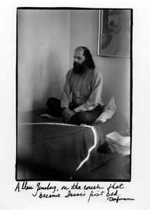
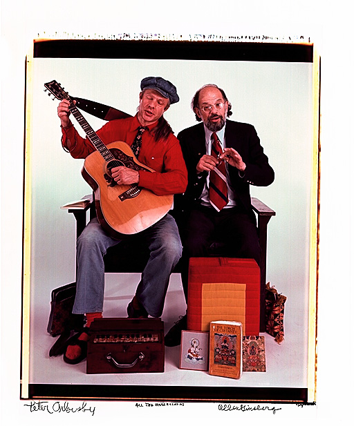
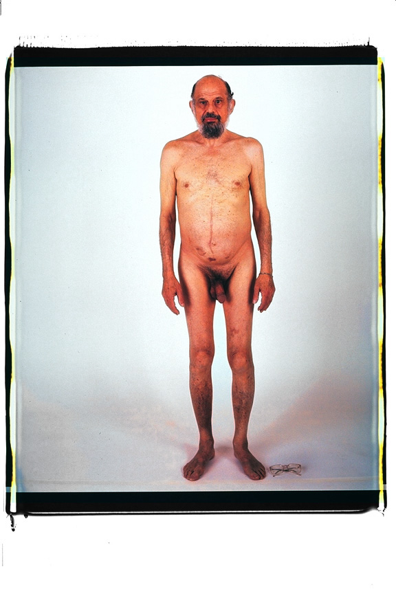
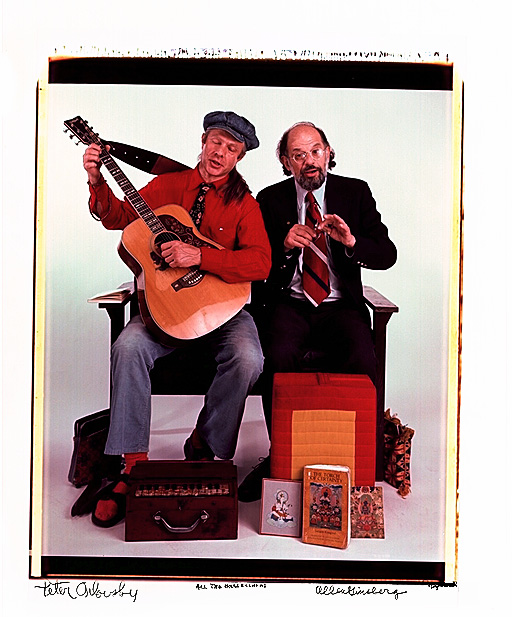
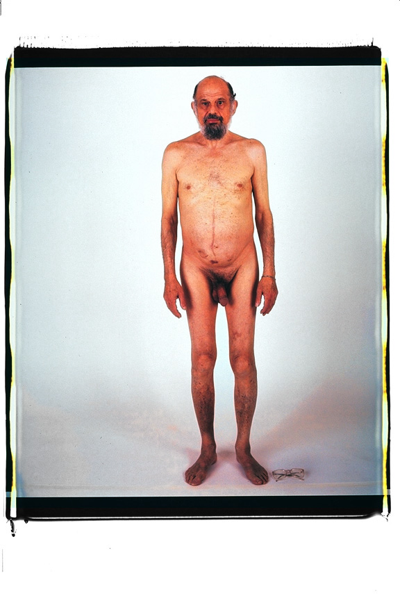
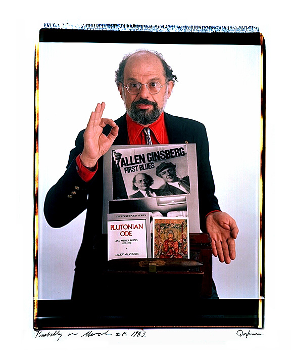
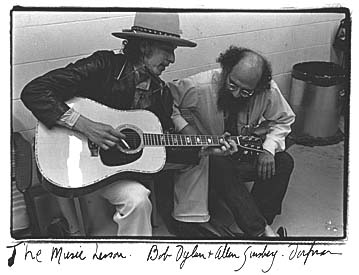

|
It was hard to take a bad photograph of Allen. Nobody did. Maybe it was because Allen was a photographer from way back. He loved to take pictures. Unrestrained, he could snap, snap and take rolls of film. His images of Kerouac, Cassidy, and Bourroughs are the ones we have in our memory of those days. For the last decade or so he always had a camera with him. He went from a Rollei to lighter and lighter and smaller and smaller cameras. And he used whatever was his camera du jour all the time, even at my house in the last month of his life (though no darkroom experiences for him, ever). |  |
{kind=link}
  
 
{kind=link}
{kind=link}
| Allen always had a sense of what makes a picture work. As a subject he instinctively helped photographers get what they wanted. He could concentrate and relax at the same time. he could be THERE in front of the lens. Loss of consciousness. No self-consciousness. No reticense. Vanity reined in by a sense of, yes, STYLE. He could pull together tiny details--a Buddha, a flower, a book, a postcard, a microphone, the right tie (and in the old days, the right political button on his overalls and the right beads) that would anchor the photograph in its hour. The gesture Allen came up with was always very specific and it was always the right one. I felt Allen did my job for me. |  |
{kind=link}
{kind=link}
{kind=link}
{kind=link}
{kind=link}

at Isaac's Bar Mitzvah, April 21, 1990. Photograph by my sister Jane Steele, Matthew's mother.
Ten of my portraits of Allen Ginsberg were part of an auction of Allen Ginsberg material at Sotheby's on October 7, 1999:
- Allen and Louis Ginsberg in Paterson, ca.1969
- Allen Ginsberg on a Late Evening, ca. 1968
- At Eliot House, Harvard, ca.1968
- Cherry Valley: portrait of Allen Ginsberg and Ed Urich, July 1970
- Allen, November 6, 1986 (taken on the Polaroid 40x80)
- The Music Lesson, Lowell, MA. November 2, 1975 (Bob Dylan and Allen Ginsberg)
- Allen, February 7, 1980
- Allen, Probably March 28, 1983
- Allen Ginsberg and Peter Orlovsky (nude portrait)
- Allen Ginsberg and Peter Orlovsky playing guitar and singing.
- Read what I wrote about seeing Allen's possessions on the block.
- Read Matthew Power's essay, "Holy Soul" in the first issue of Heeb Magazine. It's wonderful.
{kind=link}
See Allen Ginsberg in Elsa's Housebook (short essays and portraits); see a movie of Allen Ginsberg in At Home: Elsa Dorfman, a movie by Ilene H. Lang; see When We Honored Allen in Cambridge, which includes many more photographs; send postcards of Allen Ginsberg here.
Find Elsa's Books


Please change your links and bookmarks to elsadorfman.com!
Elsa thanks her cybergodmother, photo.net, her longtime, most generous host at furfly.com, and her current web host Mike Sisk at TCP/IP Ranch, LLC.
Copyright 1970-2010 © Elsa Dorfman.
Inquiries for the use of Elsa's content are welcomed!
Please
read these guidelines.
Contact
Elsa Dorfman via email or send Website Feedback to her webmaster.